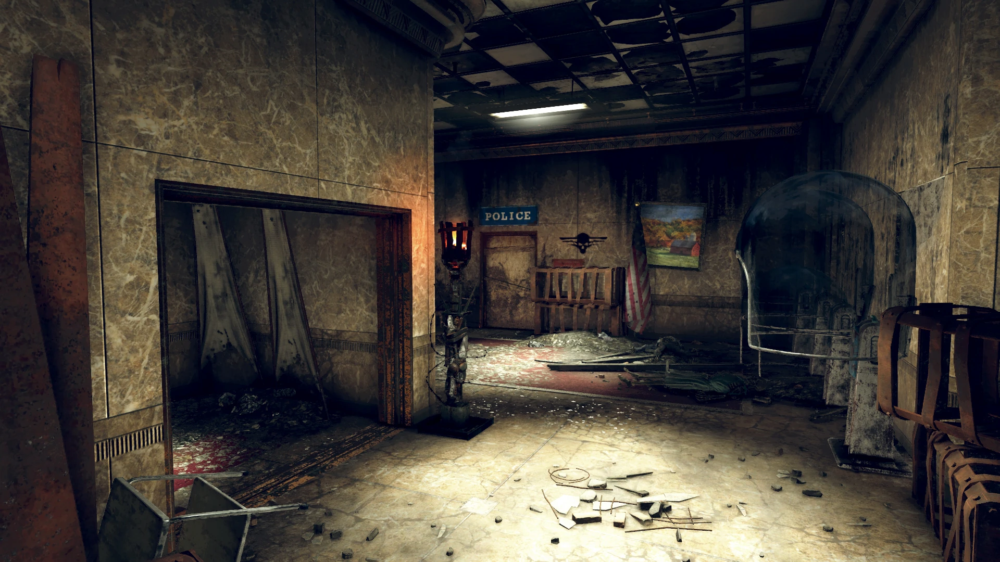
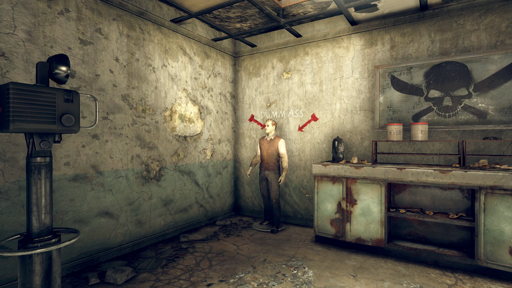
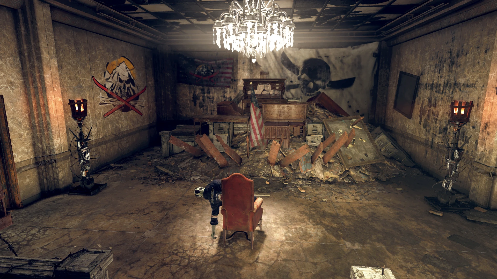
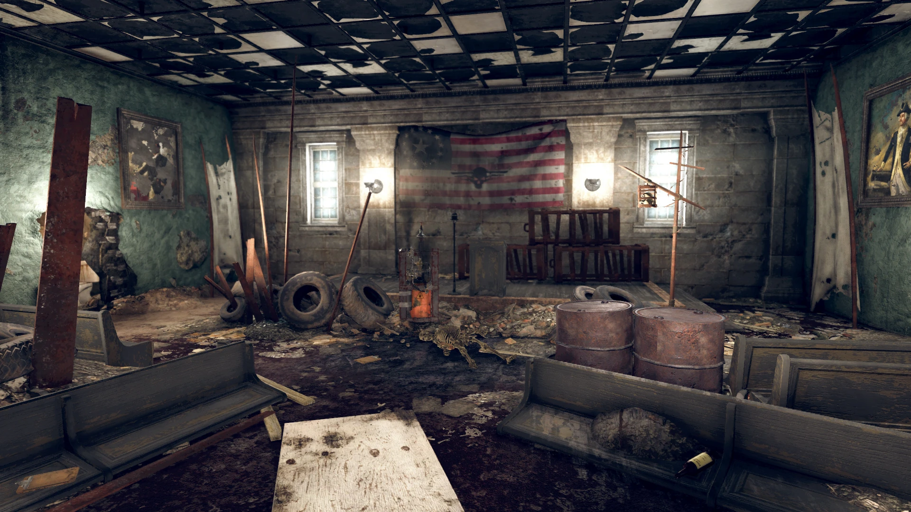
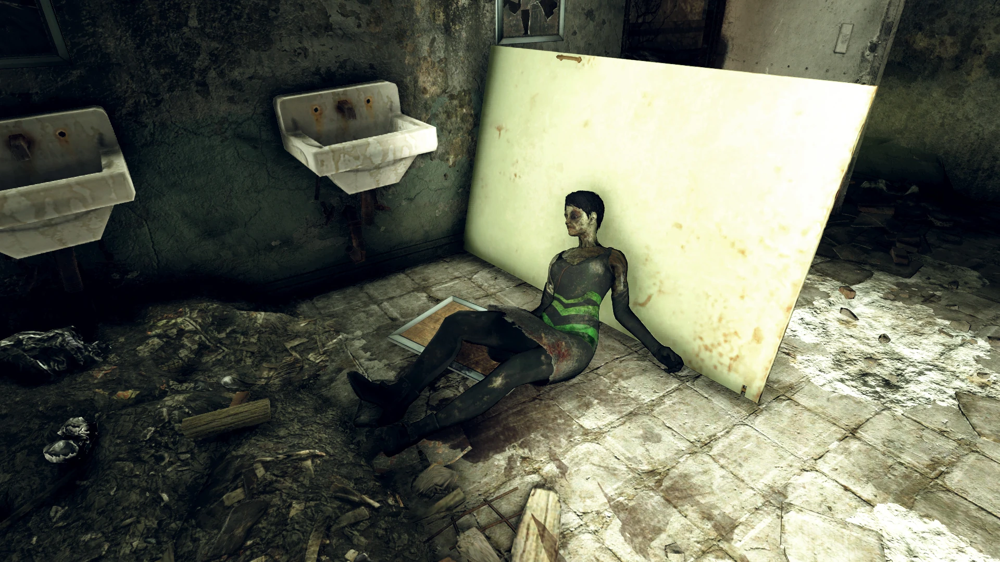
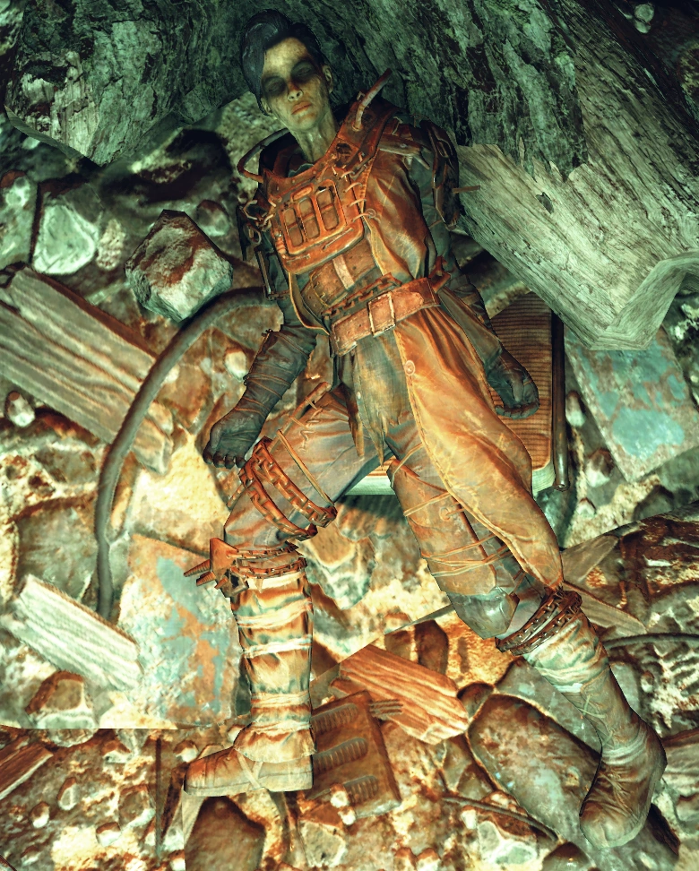
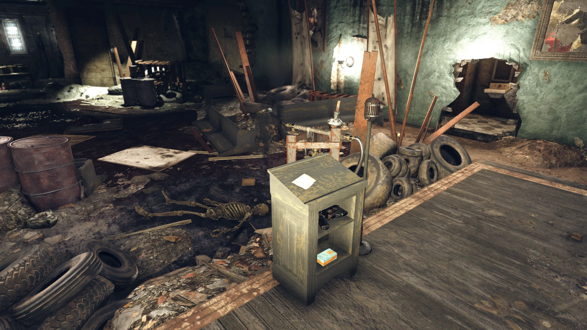
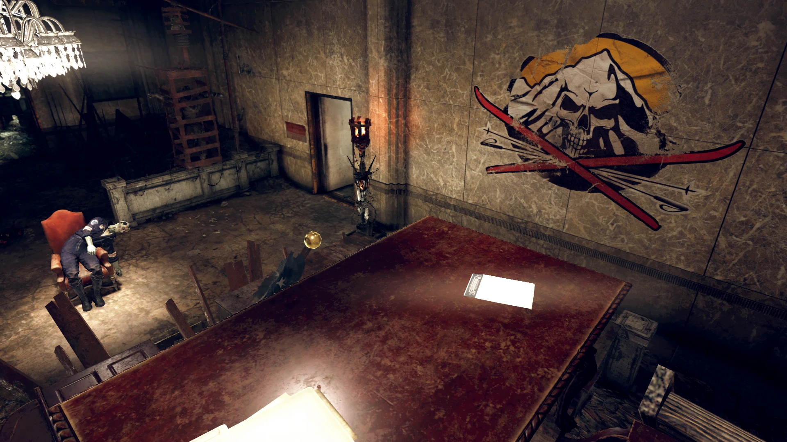
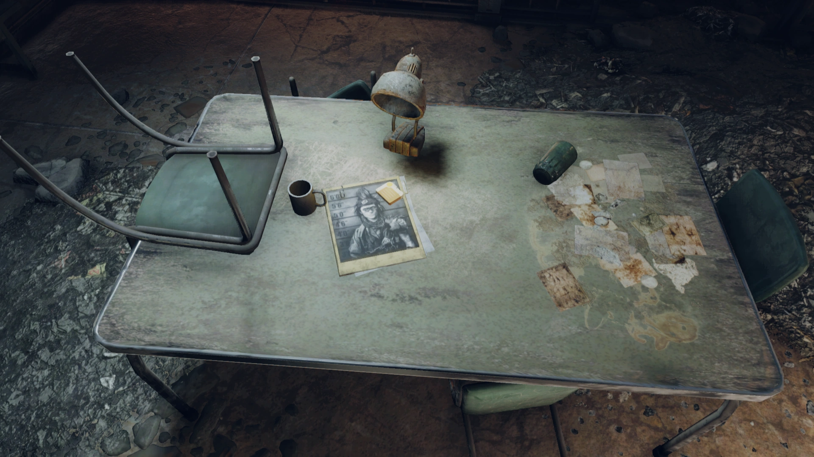

Charleston Capitol Courthouse
チャールストン議事堂裁判所
概要
チャールストン議事堂裁判所は、チャールストン議事堂ビル複合施設の一部で、南棟に位置するロケーションです。
半壊した法廷を中心に、登記所、議事堂警察署の事務所、そして留置房が含まれています。
クエスト「Key to the Past」の重要な経由地であり、デヴィッド・ソープの恋人ロザリン・ジェフリーズの遺体が安置されている場所です。
レイアウト
建物の西側にある青い扉から入ると、カットスロートの装飾——レスポンダーの遺体を含む——が出迎えます。
左に曲がると、フェンスとレイダーのバリケードが追加されたかつての受付エリアがあります。
南に向かうと2つのバスルームがあり、左のバスルームの壁に開いた穴を通ると、演壇と廃棄された長椅子のある広い部屋に出ます。
廊下を進むと、化学物質作業台と医療機器が備えられたクリニックに改造されたオフィスエリアにアクセスできます。
近くの階段は下にのみ通じており、上は瓦礫で塞がれています。
階下には州の法廷があります。カットスロートはメインの机と椅子を瓦礫の上に積み上げて「山」を作り、そこから見下ろす位置に椅子を一脚置いて、別のレスポンダーの遺体を座らせています。
北側のサイドオフィスには犯罪記録ターミナルがあり、マネキンに向けられたカメラが設置されています。マネキンの上にはチョークで「DUMM ASS」と書かれています。
赤い扉を通って北に進むと、留置房付きの尋問室があり、ロザリン・ジェフリーズの遺体が安置されています。
壁の穴からは法廷に通じる同じ廊下に出ます。北西のエリアは物資保管室として使われており、投票サービス端末もここに設置されています。
廊下の突き当たりの黒い両開き扉が出口です。この外部区画はトンネルの下に埋もれており、ボタン操作の外部ゲートを通って壊れたバスに出ると、チャールストンに戻れます。
ホロテープ 🎙️
場所：留置房区画のテーブル上
メロディ・ラーキン：ジェーン・ドウの尋問を開始する。本日午後10時30分頃、2082年12月24日、この場所で致命的な襲撃が行われた。唯一拘束されているレイダーの尋問記録である。
あんたたち、いい度胸してるわね！ よりによってクリスマスイブに！ さあ、もう一度聞くわよ。名前は？
ロザリン・ジェフリーズ：くたばれ！ 「く」は「苦しみ」の「く」、「た」は…
〈激しい打撃音〉 うっ…！
メロディ・ラーキン：そうやるなら、そうやるまでよ。ふざけるのをやめなさい、さもなければもう一発くらうわよ。
ロザリン・ジェフリーズ：〈笑い声〉
メロディ・ラーキン：笑えるの？ 外で大勢を殺しておいて、これから清算するのよ。
ロザリン・ジェフリーズ：デヴィッドが迎えに来るわ。あいつが来たら怒り狂うわよ。必要なら最後の一人まで殺す。だからこうしなさい。
あたしをこの独房からまっすぐ歩いて出させなさい。クリスマスのお土産をたっぷり持たせて、デヴィッドの元に帰してくれるならね。そうすれば、何もなかったことにしてあげてもいいわ。
メロディ・ラーキン：デヴィッド、ね？ じゃあ、デヴィッド・ソープの…彼女がここにいるってわけ？
あいつがあんたたちの…山の上のリゾートに助けを差し伸べに行った、勇敢で献身的なレスポンダー2人を殺したのは知ってるわよね。
なるほど、なるほど。紳士諸君、最重要指名手配犯をおびき出す方法が分かったわ。
ロザリン・ジェフリーズ：そんな…やめて！ あいつは殺す、あんたたち全員殺すわよ！
メロディ・ラーキン：閉じ込めておきなさい。あの山にメッセージを送る方法は明日考えましょう。
発見できるノート 📝
場所：入口近くの演壇上
お前らジャンキーどもに念のために言っておくぞ：
・洪水で流れ着いた貴重品を全部集めろ。
・うろつき回っている奴を見つけたら全員連行しろ。レスポンダーの装備を着ていたらボーナスのケミカルをやるぞ。
・そいつらを裁判所まで行進させて、清算の準備をしろ。デヴィッド・ソープに逆らうとどうなるか、全員に最後のメッセージを残してやれ。
場所：法廷内のデスク上（コンバットナイフで刺さっている）
残った者たちへの警告 ——
見回してみろ。いわゆる「チャールストン緊急政府」の成れの果てを。カットスロートは許さない、そして忘れない。
77年にチャールストンとレスポンダーが俺たちを助けるのを拒んだことを忘れていない。何度も俺たちの縄張りに侵入してきたことを忘れていない。俺たちの兄弟姉妹を冷血に殺したことを忘れていない。
これを全員への戒めとする。俺たちに逆らった者にはこうなる。忘れるな、さもなければ次はお前だ。
場所：ロザリン・ジェフリーズの遺体上
看守を刺すためにペンをくすねたけど、映画で見るほど簡単じゃなかった。あのレスポンダーのブタは様子を見にすら来なくなったし、あたしが閉じ込められている意味すらよく分からない！ メリー「くそったれ」クリスマスね…
デヴィッド、これは全部あなたのためにやったの。捕まっちゃってごめんね。こうなるつもりじゃなかった。なんとかして脱出するわ。それまで、バカなことしないで。あなたを失うなんて耐えられない。
— ローズ
注目の戦利品
- Cutthroat orders — ノート、入口近くの演壇上
- Cutthroat warning — ノート、法廷のデスク上
- Interrogation: Doe, Jane — ホロテープ、ロザリンの留置房内
- Rosalynn's note — ノート、ロザリン・ジェフリーズの遺体上
- 設計図：化学物質作業台 — 化学物質作業台の上
- レシピ — 調理ステーション上のテーブル
ゲーム情報
- この場所は元々、議事堂ビルの残りの部分と一つの大きな内部空間でしたが、ナビゲーション改善のために分割されました。
- 議事堂ビル本体はレベル30以上推奨ですが、裁判所はレベル15以上推奨と低めに設定されています。
登場作品
チャールストン議事堂裁判所は『Fallout 76』のNuclear Winterアップデートで追加されました。
ギャラリー









裁判所は「Key to the Past」のダークなクライマックスの舞台です。
カットスロートが机と椅子を瓦礫の上に積み上げて「玉座」を作り、レスポンダーの遺体を見下ろす配置——この空間演出がレイダーの残虐さを雄弁に物語っています。
尋問テープは名演技の宝庫。メロディ・ラーキンの疲弊した怒りと、ロザリンの半ば錯乱しながらも折れない反抗心のコントラストが素晴らしい。
「デヴィッドが来る」と脅すロザリンに、メロディが「ならデヴィッド・ソープの彼女がここにいるのね？」と冷たく切り返す瞬間——その声色の変化に鳥肌が立ちます。
そしてロザリンのメモ。彼女は結局このままクリスマス洪水に飲まれ、デヴィッドに会えないまま死んでしまいました。
「バカなことしないで」——しかしデヴィッドはこの後、彼女を取り戻すためにサマーズヴィル・ダムを破壊し、チャールストンを丸ごと洪水で沈めてしまうのです。
愛する人を救おうとした行動が、その人を殺してしまった——これほど残酷な結末はありません。
This article was created by translating and editing Charleston Capitol Courthouse from Nukapedia: The Fallout Wiki.
Licensed under the Creative Commons Attribution-Share Alike License (CC BY-SA 3.0).
コミュニティ維持のため、寄付を受け付けております。
> COMMENTS